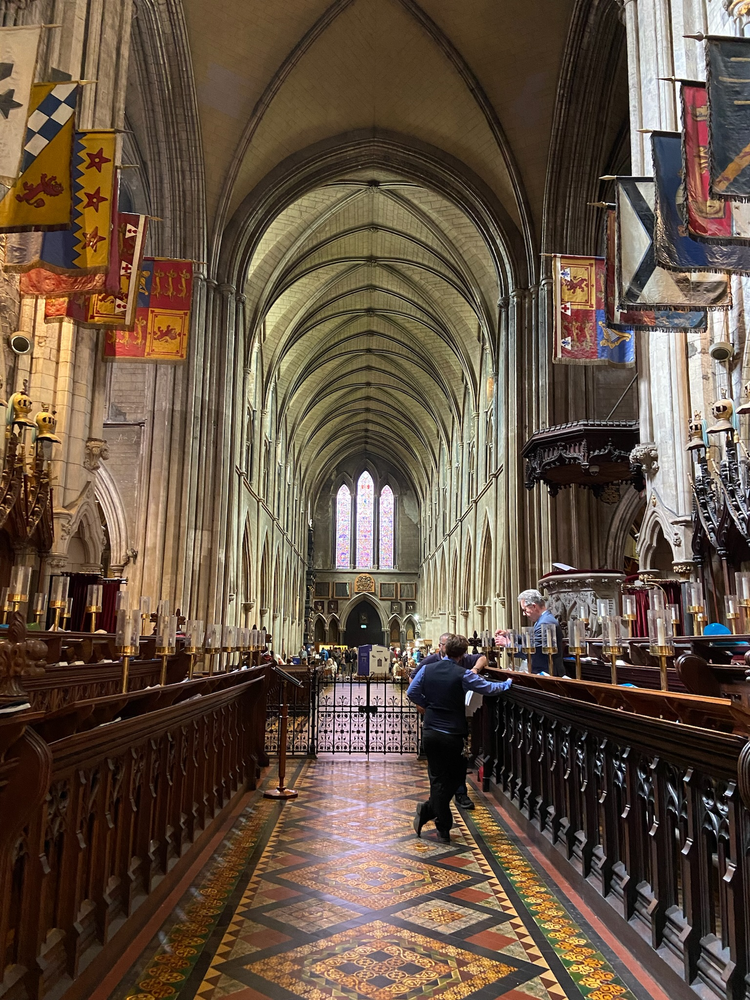
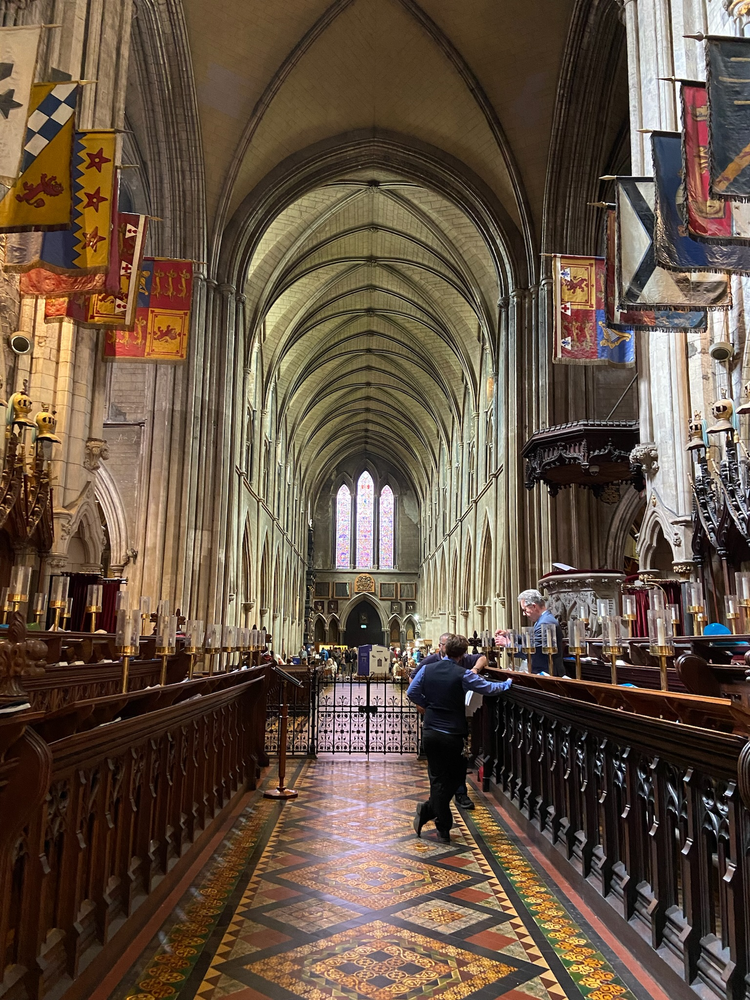

On our second day, the first stop was at the St. Patrick's Cathedral (pictured right). We had a guided tour of the cathedral and the interior was gorgeous. There were many old artifacts and such throughout, but my favorite part was the stained glass windows (shown below). We then explored the Temple Bar area, and finished the first half of the day with a tour of Trinity College.
Our next stop was at the Guinness Storehouse in Dublin. There were a lot of floors that covered the proccess of making Guinness, including the ingredients, the processing, fermentation, and even the glasses/barrels they use to store and package it. At the top there was the Gravity Bar where you could use your ticket to get one pint of Guinness (as seen in the extra photo). I discovered that day that Guinness tastes terrible! To finish off the night, we watched a game of lacrosse between my sisters team and the Ireland National team.
 
